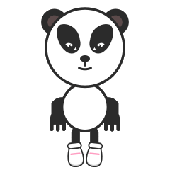

All nearTodo cerca Love links moreEl amor une más Vibe up togetherVibremos juntos Dive and DoLánzate y actúa What's in your love?¿Qué hay en tu amor?

Run flove right on your Android phone — no internet or network at all. Run the command or scan the QR.Ejecuta flove en tu propio móvil Android — sin internet ni red. Ejecuta el comando o escanea el QR.
Open the same flove on your phone — over your Wi-Fi, or via Tailscale from any network (HTTPS, so offline works there too).Abre Flove por tu Wi-Fi, o por tu red (Tailscale) desde cualquier red; por HTTPS también funciona sin conexión.
Install the ready-made app — a small wrapper around flove.org. Download, allow installing apps from this source when prompted, then open it.Instala la app lista para usar: un pequeño envoltorio de flove.org. Descárgala y permite «instalar apps desconocidas» cuando lo pida.